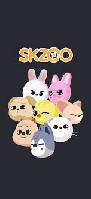
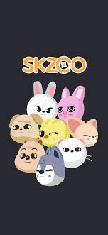

Descubre a Stray Kids
Inicio a ser Stay
- 8 integrantes
- 2 australianos
- 6 coreanos
- Compositores, bailarines, cantantes, modelos
Integrantes
- Bang Chan
- Lee Know
- Changbin
- Hyunjin
- Han
- Felix
- Seungmin
- I.N.
Datos básicos
Grupo surcoreano debutado en 2017 por JYP Entreteiment
Como cualquier grupo de kpop cuenta con un lightstick, el cual en su centro tiene una estrella:
 Cuentan con una serie de peluches que los representan llamados Skzoo, al darle clic a la imagen te redirigirá a la página de skzoo store.

El fandom se llama Stay, el cual el grupo le asigno ese nombre con el significado de "Que se quede a nuestro lado"
Cuentan con una serie de peluches que los representan llamados Skzoo, al darle clic a la imagen te redirigirá a la página de skzoo store.

El fandom se llama Stay, el cual el grupo le asigno ese nombre con el significado de "Que se quede a nuestro lado"
Información de integrantes
Christopher Bang, más conocido como Bang Chan, es un cantante, compositor, rapero y productor surcoreano.
Es conocido por crear y formar parte del grupo Stray Kids, donde se desempeña como líder, vocalista, rapero, letrista, compositor y productor.
Lee Min-ho, más conocido como Lee Know, es un cantante, rapero y bailarín surcoreano. Es popularmente conocido por ser miembro del grupo Stray Kids.
Seo Chang-bin, más conocido como Changbin, es un rapero, letrista, compositor y productor surcoreano. Es popularmente conocido por ser miembro del grupo Stray Kids. Además, forma parte del trío 3Racha bajo el pseudónimo SpearB, que se encarga de componer y producir las canciones del grupo.
Hwang Hyun-jin, más conocido como Hyunjin, es un rapero, cantante, modelo, MC y bailarín surcoreano. Es popularmente conocido por ser miembro del grupo Stray Kids.
Han Ji-sung, más conocido como Han, es un rapero, letrista, compositor y productor surcoreano. Es popularmente conocido por ser miembro del grupo Stray Kids. Además, forma parte del trío 3Racha bajo el pseudónimo J.One, que se encarga de componer y producir las canciones del grupo.
Felix Lee, más conocido como Felix, es un rapero y bailarín australiano de origen coreano. Es popularmente conocido por ser miembro del grupo Stray Kids
Kim Seung-min, más conocido como Seungmin, es un cantante y bailarín surcoreano. Es popularmente conocido por ser miembro del grupo Stray Kids.
Yang Jeong-in, más conocido como I.N, es un cantante y bailarín surcoreano. Es popularmente conocido por ser miembro del grupo Stray Kids.
Cuestionario Stay
Canal de YouTube
Da clic en el símbolo de YouTube o Instagram para conocer más a Stray Kids